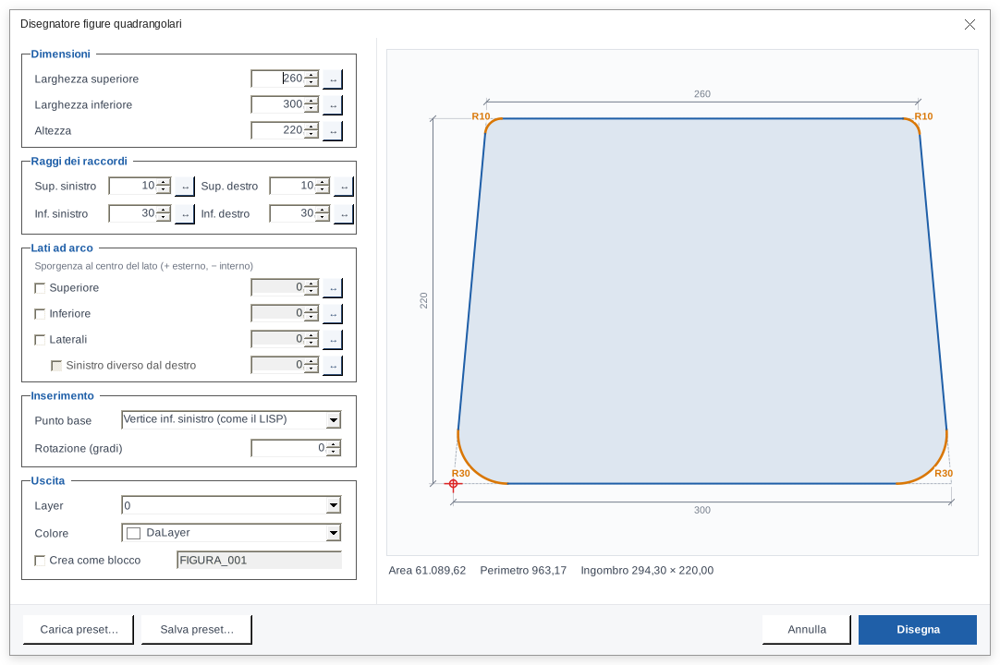
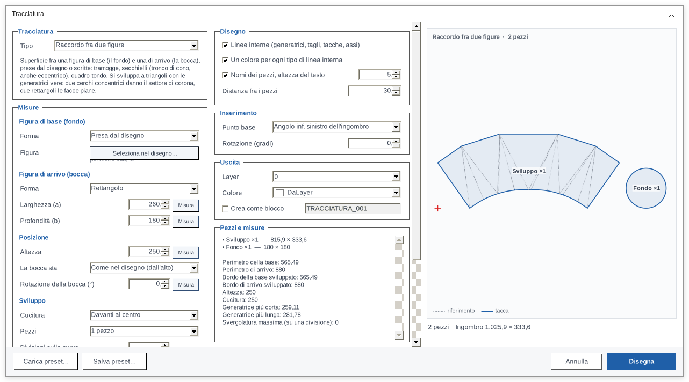
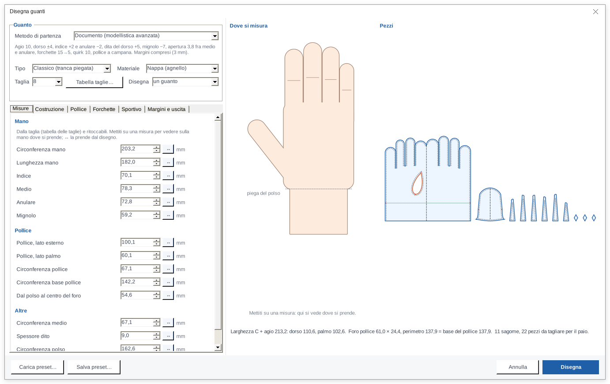
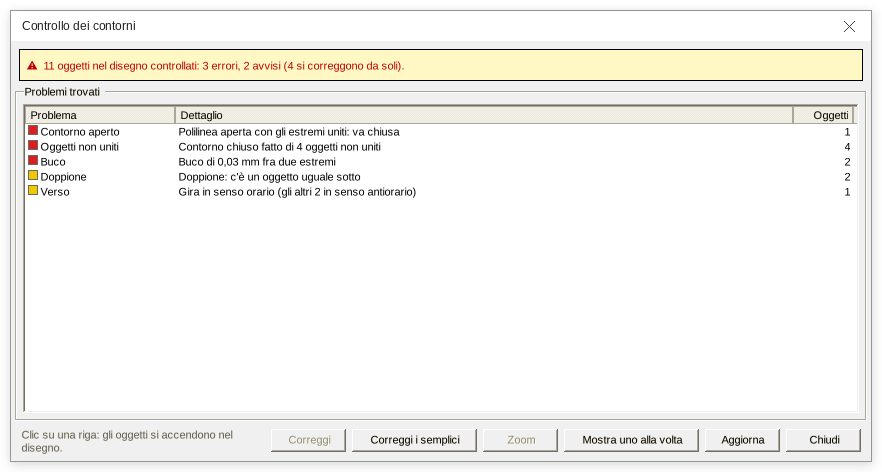
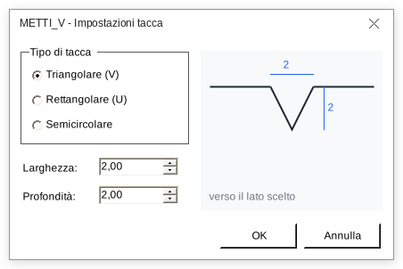
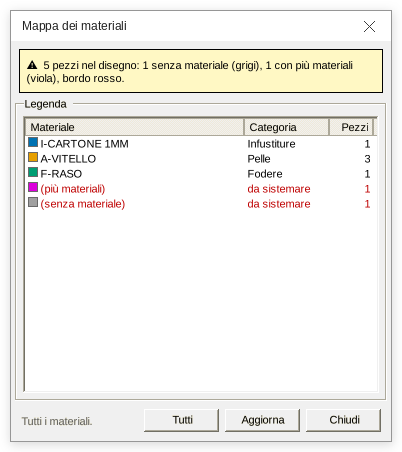
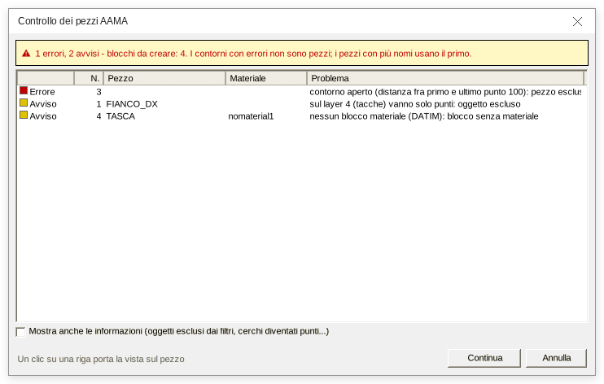
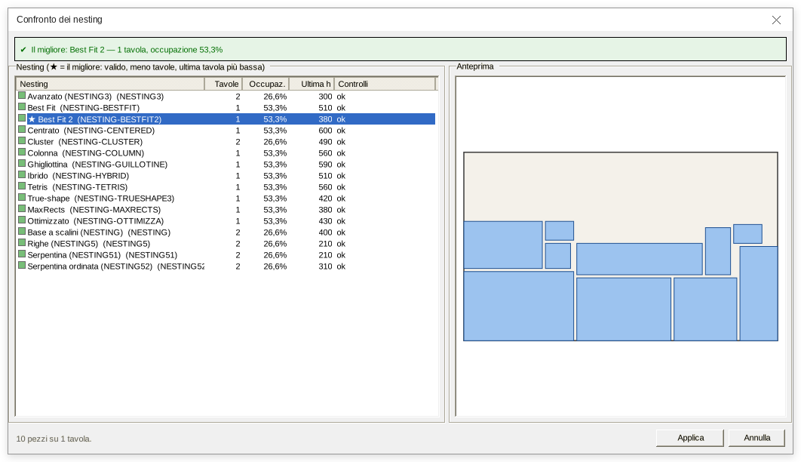
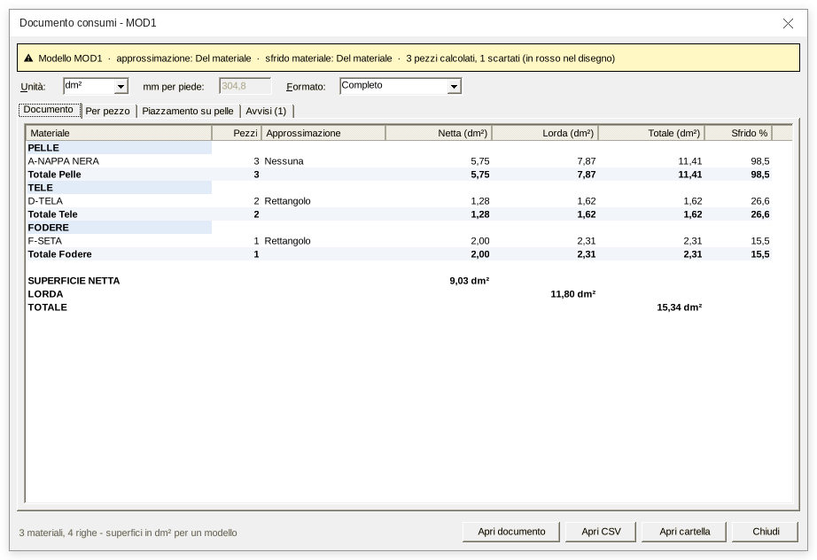

Il CAD che dà forma alle tue borse, dal disegno al taglio.
Leonardo Pattern Design è l'aggiunta per ZWCAD e AutoCAD pensata per la modellistica di pelletteria. Disegni le sagome, metti le tacche e i dati del pezzo, prepari il taglio e calcoli consumi e costi, senza uscire dal CAD.
Cosa c'è di nuovo nella 5.2
Gran parte dei comandi storici è stata riscritta in moduli .NET più veloci, con gli stessi nomi di sempre: il menu e le abitudini restano quelli.
DIBA, la distinta base in Excel
Scheda tecnica e distinta base del modello in un file Excel, con logo e foto dei pezzi. Si scrive anche senza Excel installato.
ATOM Layout dentro il CAD
Il piazzamento per la macchina ATOM si prepara nel disegno e si salva in .lay, .die e .shc, senza passare da altri programmi.
Tacche tagliate in 8 forme
V, arco, U, rettangolo, coda di rondine, fessura, poligono, anche raccordate. Con anteprima, in AAMA e nelle tacche.
Confronto dei nesting
Lancia tutte le strategie insieme e scegli la migliore: tavole usate, occupazione e anteprima in una sola finestra.
Anagrafiche di materiali e accessori
Per ogni materiale codice, fornitore, prezzo, pelle o rotolo e colore; per ogni accessorio codice e fornitore (ED-DB-ACC). Le usano consumi, costi e DIBA, e si scambiano con Excel in CSV. Più la mappa colorata dei materiali e il controllo dei pezzi senza nome o materiale.
Un installatore, nove CAD
Un solo setup chiede dove installare: AutoCAD 2018, 2024, 2025, 2026, 2027 o ZWCAD 2024, 2025, 2026, 2027, e ti dice quali hai sul PC. Fa da solo la copia di sicurezza dei file del CAD.
Chiedi al disegno, in italiano
Un assistente di intelligenza artificiale dentro il CAD, che conosce il mestiere del modellista e i comandi di Leonardo.
Con il comando LEO_IA si apre una chat accanto al disegno. Fai la domanda come la faresti a un collega: l'assistente legge i pezzi, i materiali e le quantità dai blocchi DATIM e DATIT, le tavole, i testi e i layer, e ti risponde. Se serve guarda un'immagine del disegno, confronta due pezzi ed evidenzia quelli di cui parla.
Può anche lanciare i comandi di Leonardo che gli permetti, chiedendoti conferma prima di toccare il disegno; e quello che ha fatto si annulla con un clic. I conti li fa Leonardo, come sempre: consumi, costi e distinte escono dai suoi comandi.
Disponibile per ogni versione: ZWCAD 2024–2027, AutoCAD 2018 e 2024–2027MAT su di loro?NOG ti chiedo conferma: il calcolo lo fa Leonardo, io ti spiego il risultato.Legge e guarda il disegno
Pezzi, materiali e quantità, tavole, testi e layer; un'immagine del disegno quando serve; due pezzi a confronto, con le differenze di forma in millimetri.
Comandi con conferma
Lancia solo i comandi di Leonardo ammessi, chiede conferma prima di scrivere nel disegno e l'ultimo comando si annulla con un clic.
Profili per ogni lavoro
Modellista, Esperto Python, Disegnatore polilinee, Esperto anagrafiche: scegli chi ti risponde. Puoi aprire più finestre, ognuna con il suo profilo.
La tua IA, la tua chiave
Scegli tu il fornitore e il modello, con la tua chiave. I dati del disegno vanno solo al fornitore che hai scelto.
Anche con Claude, via MCP
Leonardo si collega a Claude attraverso MCP (LeonardoMcp.exe): gli stessi strumenti, dal programma che usi già.
Più chat, più disegni
Apri più finestre di chat insieme, ognuna con la sua conversazione, il suo modello e il suo profilo, e scegli per ognuna su quale disegno aperto lavorare.
Tutto il lavoro del modellista, in un menu solo
Dalla prima linea al file per la macchina da taglio. Ogni comando ha la sua icona nel menu LEONARDO e si può anche digitare.
Quadranti, fasce, pence e cannoni
Compili una finestra e vedi il pezzo nascere nell'anteprima. Ogni misura si può prendere dal disegno con un clic.
- Quadranti con raggi e lati ad arco, fasce a misura, pence e cannoni.
- Costruzioni pronte di fianchi, fondi, soffietti e fodere.
- Pezzi già completi di pieghe, tacche e nomi.

Tramogge, secchielli e superfici sviluppate in piano
Dal fondo alla bocca: Leonardo sviluppa la superficie che li unisce, con le generatrici vere e le misure di controllo.
- Raccordi fra due figure, tubolari, manici a spicchi, tasche innestate.
- Sviluppo in piano di fasce 3D, conservando le lunghezze vere.

Il cartamodello del guanto, dalle misure della mano
Inserisci le misure o scegli la taglia: Leonardo disegna tranca, pollice, forchette e quirk, con cuciture, pieghe e tacche.
- Guanto classico, a due pezzi, sportivo e da guida.
- Sei tipi di pollice e tabella taglie dell'azienda, con preset salvabili.

Contorni puliti, pronti per il taglio
Una sola finestra controlla tutto il disegno: contorni aperti, tratti non uniti, buchi, doppioni e verso. Quelli semplici si correggono da soli.
- Unione dei tratti in polilinee chiuse, anche senza PEDIT.
- Stesso verso per tutti i contorni e nuovo punto di inizio.

Tacche a misura, copiate e convertite
Metti le tacche a una distanza precisa, riportale fra i pezzi che si cuciono e convertile per la tua macchina.
- Formati: tacca, tacca tagliata, Mozart, punto Geber.
- Tacche tagliate nel contorno in otto forme, anche raccordate.

Nome, materiale, lavorazioni e accessori
Ogni pezzo porta con sé i suoi dati, scelti da elenchi: viaggiano con il disegno, senza file a parte.
- Anagrafica materiali con fornitore, prezzo, pelle o rotolo, colore.
- Mappa colorata per materiale o categoria, con legenda.
- Controllo dei pezzi senza nome o senza materiale.

AAMA, ATOM, Geber e Modaris
Dalle sagome ai file per la macchina da taglio, senza toccare il disegno. Prima di scrivere, una finestra mostra errori e avvisi: un clic porta al pezzo.
- DXF AAMA in un file unico o un file per pezzo, anche per cartelle intere.
- Layout ATOM con file
.lay,.die,.shc. - Tacche Geber, dime e conversione da Modaris (Lectra).

Meno sfrido sulla tavola e sulla pelle
Dispone i pezzi per usare meno materiale. Puoi provare tutte le strategie insieme e tenere la migliore.
- Nesting sulla forma vera, con zone vietate per difetti e morsetti.
- Ottimizzazione a tempo e confronto fra 16 strategie.
- I pezzi originali restano dove sono.

Consumi, costo del modello e distinta base
Calcola i consumi per pelle, infustiture, tele, fodere e accessori, con gli sfridi spiegati passo per passo.
- Scarto misurato piazzando i pezzi su una pelle campione, anche con i difetti.
- Costo del modello: materiali, accessori, lavorazioni e cuciture, con ricarico.
- Documenti HTML, CSV ed Excel, e la DIBA.

〰️Offset e cuciture
Linee di cucitura da 2 a 10 mm, ringrano, offset incrementali e offset di un solo tratto in cinque varianti.
🖨️Tavole e sbozzi
Il cartamodello pronto per il plotter, anche su A3, e gli sbozzi a spigoli vivi o arrotondati.
📄Schede tecniche
Schede dei pezzi con le immagini, in HTML interattivo e CSV, e schede di accessori e lavorazioni con i costi.
🔍Cerca sagome nell'archivio
Trova in tutti i DWG di una cartella i pezzi uguali a una sagoma, anche ruotati, specchiati o con un offset.
✏️Forme e strumenti
Ovali, ovoli, ellissi, cicloidi, rettangolo aureo, squadratura, diciture rapide e layer di taglio con un clic.
🧵Passanti
Lo sviluppo del passante dalla vista di fianco della tracolla, con anteprima.
Oltre 350 comandi, ognuno con la sua icona
Menu e barre degli strumenti divisi per fasi di lavoro: Disegno, Polilinee, Offset, Tacche, Materiali e Articoli, AAMA ed Export, Consumi e Report. Una guida in italiano spiega ogni comando.
Dalla sagoma al taglio in 9 passi
Il percorso normale di un modello in Leonardo.
Disegna le sagome
Forme base, quadranti, fasce, pence, tracciature, passanti, guanti.
Sistema i contorni
Polilinee chiuse, buchi trovati, tutto controllato con CONTROLLA_CONTORNI.
Dai i layer di taglio
Contorno esterno su OUTCUT, tagli interni su INTCUT, rifili su ENDCUT.
Inserisci i dati del pezzo
Nome, materiale, lavorazioni, accessori. Poi CONTROLLA e MAPPAMAT.
Metti le tacche
A misura, copiate fra i pezzi che si cuciono, o tagliate nel contorno.
Offset, cuciture, sbozzi
Linee di cucitura, ringrano, sbozzi e dime.
Prepara il taglio
DXF AAMA, layout ATOM o Geber, secondo la tua macchina.
Stampa il cartamodello
PRESTAMPA e un nesting sulla tavola.
Consumi e documenti
Consumi, costo del modello, schede dei pezzi e distinta base.
Guarda Leonardo al lavoro
Brevi filmati registrati in ZWCAD, senza audio. Scegli un comando dall'elenco: alla fine passa da solo al successivo.
Leonardo in azione
Le finestre dei comandi così come le vedi nel CAD. Tocca un'immagine per ingrandirla.
Funziona con il tuo CAD
Windows 10 o successivo, 64 bit. Lo stesso menu e gli stessi comandi su ZWCAD e su AutoCAD.
CAD supportati
| Programma | Versioni | |
|---|---|---|
| ZWCAD | 2024 · 2025 · 2026 · 2027 | Sì |
| AutoCAD | 2018 · 2024 · 2025 · 2026 · 2027 | Sì |
Un solo installatore per tutte e nove: nella prima pagina scegli su quale programma installare e ti dice quali hai sul PC. Su AutoCAD 2018 e 2024 i moduli usano .NET Framework 4.8, quindi lì non serve il runtime .NET 10.
Hai una versione più vecchia? Scrivimi: si valuta caso per caso.
File e macchine
Legge e scrive i formati che usi già in laboratorio.
Un piano per ogni laboratorio
Prezzi chiari, nessun costo nascosto. Prima di scegliere puoi provare Leonardo gratis.
Licenza online
Acquisti online e ricevi una chiave: la attivi dal CAD e si convalida in rete.
Licenza senza rete
Per i PC non collegati a internet: un file di licenza .lic legato alla postazione. Contattami per averla.
Gestione licenza
Il comando LEO-LICENZA, o il menu LEONARDO › Gestione Licenza, apre una finestra con stato, attivazione e funzioni incluse.
Basta una licenza valida, statica o online, e Leonardo funziona: una sola licenza per tutto.
Pro Mensile
Per professionisti e aziende, fatturazione mensile
- Tutti i comandi
- Aggiornamenti inclusi
- Supporto via email
- Nessun vincolo di durata
Studenti e Privati
Tariffa agevolata per uso non commerciale
- Tutti i comandi
- Aggiornamenti inclusi
- Uso non commerciale
- Guida completa in italiano
Prezzi IVA esclusa. Per scuole e istituti, più postazioni, piani aziendali o passaggio da altri programmi, scrivimi.
Prova Leonardo gratis
Avvia la prova dal negozio online di Leonardo. Se invece ti serve una licenza statica, per un PC senza internet, scrivimi e te la preparo.
Leonardo Guasqui
Ideatore e sviluppatore
Montespertoli, Toscana
Nato in laboratorio, non in una software house
Leonardo nasce dentro una manifattura toscana di pelletteria di lusso, dove lavoro come responsabile tecnico e sviluppatore. Ogni comando è partito da un problema vero del reparto modelli: un'operazione che prendeva ore, un file che la macchina da taglio non leggeva, un consumo da ricalcolare a mano.
Il progetto è cresciuto un comando alla volta, prima in AutoLISP e oggi in moduli .NET, sempre con lo stesso obiettivo: far lavorare il modellista sul modello, non sul CAD.
- Le origini: autodidatta, dai primi programmi in Visual Basic all'elettronica e ai microcontrollori.
- Dal 2017: software per la pelletteria in azienda, collegato alle macchine da taglio. Nasce Leonardo.
- Oggi: Leonardo su ZWCAD e AutoCAD, più consulenze su automazione, software su misura e corsi di formazione.
Domande frequenti
Con quali CAD funziona Leonardo?
Con ZWCAD dalla versione 2024 alla 2027 e con AutoCAD 2018 e dalla 2024 alla 2027, su Windows 10 o successivo a 64 bit. Menu, icone e comandi sono gli stessi sui due programmi.
Cos'è l'assistente IA?
Una chat dentro il CAD (comando LEO_IA): chiedi in italiano e l'assistente legge il disegno, guarda i pezzi, li confronta e, se gli dai il permesso, lancia i comandi di Leonardo chiedendoti conferma. Scegli tu il fornitore di IA e usi la tua chiave; si collega anche a Claude via MCP. È disponibile per ogni versione: ZWCAD 2024–2027, AutoCAD 2018 e 2024–2027.
Come compro la licenza?
Online, sul negozio di Leonardo su Lemon Squeezy: ricevi la chiave e la attivi dal CAD nella finestra Gestione licenza (LEO-LICENZA). Per un PC senza internet c'è la licenza statica, su file: contattami. Basta una licenza valida, statica o online.
Posso provarlo prima di acquistarlo?
Sì: avvia la prova dal negozio online. Per una licenza statica, su un PC senza internet, scrivimi indicando CAD e versione che usi.
Come si installa?
Con un installatore unico: nella prima pagina scegli su quale programma installare, fra nove voci (AutoCAD 2018, 2024, 2025, 2026, 2027 e ZWCAD 2024, 2025, 2026, 2027), e ti dice quali sono installati sul PC. Poi trova dove è installato il CAD, fa una copia di sicurezza dei file che sostituisce e mette menu, icone, blocchi ed elenchi. All'avvio del CAD i comandi sono già pronti.
Arrivo da Mozart o da un altro programma: quanto ci metto a imparare?
Poco. Chi arriva da Mozart ritrova le sue tacche e le converte con un comando. Il menu è diviso per fasi di lavoro e la guida in italiano spiega ogni comando con le sue finestre.
Posso usare i miei disegni attuali?
Sì: Leonardo lavora su normali file DWG e DXF. Converte anche i file Modaris e le tacche dei formati più usati. Per passaggi più grandi ti aiuto io.
Come funziona il calcolo dei consumi?
Il comando NOG calcola per categoria la superficie netta e poi aggiunge gli sfridi, mostrando ogni passaggio. Lo sfrido si può impostare o misurare piazzando i pezzi su una pelle campione, anche con i difetti.
Funziona con la mia macchina da taglio?
Leonardo scrive il DXF AAMA che leggono la maggior parte delle macchine, i file per ATOM e le tacche Geber, con configurazioni di layer e colori per ogni macchina. Se hai dubbi, mandami un file di esempio.
Che supporto ricevo?
Supporto via email con risposta entro 24 ore, la guida completa in italiano e gli aggiornamenti inclusi nella licenza. Su richiesta, corsi di formazione.
Parliamone
Domande, una dimostrazione o un preventivo: scrivimi.